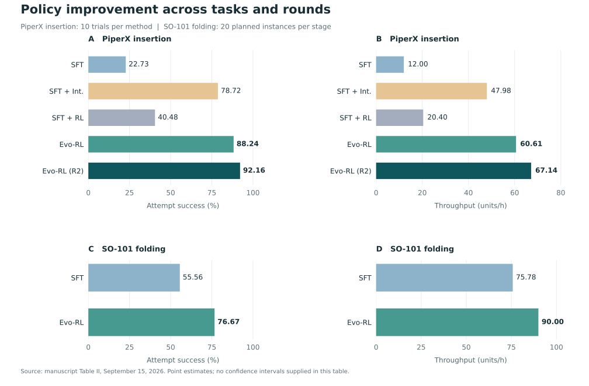

PiperX insertion待补充：插入视频，标注策略与播放倍速
Grasp, align, and insert five screw–sleeve pairs.
Manuscript draft · 作者与单位待补充
Evo-RL improves demonstration-trained VLA policies by alternating human-intervention refinement and advantage-guided fine-tuning. Corrections target difficult deployment states; selected experience focuses subsequent training while helping retain learned skills.
Compared with demonstration-only fine-tuning, the first round improves attempt success by 65.51 percentage points on insertion and 21.11 on folding. A second insertion round reaches 92.16%.
Initialize π0.5 on demonstrations, then alternate corrective and advantage-guided updates. Each update continues from the latest policy checkpoint.

The reported setting estimates advantages over 50 actions, selects positive starts in the global top 10%, and retains 20-action forward windows. Overlapping or adjacent windows merge within each episode. Original demonstrations remain in the training mixture, with selected segments sampled more often.

The task-specific visual value model uses 201 return bins in [−1, 0]. Rewards penalize elapsed time and the policy transition before a human takeover. Successful autonomous rollouts enter policy training after execution surpasses the demonstration baseline.
SR is attempt success, distinct from full-task completion. TP counts completed insertion pairs or folding stages per hour. Trials have a five-minute limit.

Evo-RL exceeds intervention-only refinement on insertion by 9.52 percentage points in SR and 26.3% in TP. A second round raises SR from 88.24% to 92.16% and TP from 60.61 to 67.14 units/h.
| Task | Method | SR (%) ↑ | TP (units/h) ↑ |
|---|---|---|---|
| PiperX insertion | SFT | 22.73 | 12.00 |
| SFT + Int. | 78.72 | 47.98 | |
| SFT + RL | 40.48 | 20.40 | |
| Evo-RL | 88.24 | 60.61 | |
| Evo-RL (R2) | 92.16 | 67.14 | |
| SO-101 folding | SFT | 55.56 | 75.78 |
| Evo-RL | 76.67 | 90.00 |
SFT + RL refines the demonstration-trained policy without collecting corrections. Each cell below is successes / planned instances (attempts). Folding U₁–U₅: retrieval, spreading, folding in half, sleeves, and hem.
| Condition / method | U₁ | U₂ | U₃ | U₄ | U₅ |
|---|---|---|---|---|---|
| PiperX insertion · SFT | 7/10 (20) | 3/10 (15) | 0/10 (9) | 0/10 (0) | 0/10 (0) |
| PiperX insertion · SFT + Int. | 9/10 (11) | 9/10 (12) | 8/10 (10) | 6/10 (8) | 5/10 (6) |
| PiperX insertion · SFT + RL | 8/10 (17) | 5/10 (12) | 3/10 (8) | 1/10 (4) | 0/10 (1) |
| PiperX insertion · Evo-RL | 10/10 (10) | 10/10 (10) | 10/10 (12) | 10/10 (11) | 5/10 (8) |
| PiperX insertion · Evo-RL (R2) | 10/10 (10) | 10/10 (10) | 10/10 (11) | 9/10 (10) | 8/10 (10) |
| SO-101 folding · SFT | 20/20 (20) | 17/20 (76) | 16/20 (18) | 16/20 (21) | 16/20 (18) |
| SO-101 folding · Evo-RL | 20/20 (20) | 19/20 (36) | 18/20 (22) | 18/20 (22) | 17/20 (20) |
For folding U₂, Evo-RL increases completions from 17 to 19 while reducing attempts from 76 to 36. Insertion R2 increases U₅ completions from 5 to 8; U₄ changes from 10 to 9.
At a 4 h human-control budget, SFT + Int. raises SR from 27.03% to 51.52%. The 8 h intervention mixture exceeds 16 h SFT in SR (80.85% vs 78.26%), with slightly lower TP (50.67 vs 53.27).
| Human budget | Method | SR (%) ↑ | TP (units/h) ↑ |
|---|---|---|---|
| 2 h | SFT | 0.00 | 0.00 |
| SFT + Int. | 46.15 | 7.20 | |
| 4 h | SFT | 27.03 | 12.00 |
| SFT + Int. | 51.52 | 20.40 | |
| 8 h | SFT | 43.68 | 50.17 |
| SFT + Int. | 80.85 | 50.67 | |
| 16 h | SFT | 78.26 | 53.27 |
Each intervention budget includes one hour of corrections: 1+1 h, 3+1 h, or 7+1 h. SFT trains for 2.5 epochs; intervention settings add 2.5 epochs on the combined data. Human-control budgets are matched, while training schedules differ.
| Condition / method | U₁ | U₂ | U₃ | U₄ | U₅ |
|---|---|---|---|---|---|
| 2 h · SFT | 0/10 (18) | 0/10 (0) | 0/10 (0) | 0/10 (0) | 0/10 (0) |
| 2 h · SFT + Int. | 5/10 (12) | 1/10 (1) | 0/10 (0) | 0/10 (0) | 0/10 (0) |
| 4 h · SFT | 5/10 (23) | 4/10 (7) | 1/10 (7) | 0/10 (0) | 0/10 (0) |
| 4 h · SFT + Int. | 7/10 (13) | 5/10 (14) | 3/10 (3) | 2/10 (2) | 0/10 (1) |
| 8 h · SFT | 9/10 (21) | 9/10 (14) | 8/10 (23) | 8/10 (19) | 4/10 (10) |
| 8 h · SFT + Int. | 9/10 (11) | 9/10 (11) | 8/10 (10) | 7/10 (9) | 5/10 (6) |
| 16 h · SFT | 9/10 (12) | 8/10 (9) | 8/10 (8) | 6/10 (12) | 5/10 (5) |
The figure supplied on September 14 covers first-round policies and a subset of human-data budgets. Newer conditions are included in the main tables above.

Values below retain the figure’s precision. A dash in completion time means no successful trials.
| Metric | SFT | SFT + Int. | Evo-RL |
|---|---|---|---|
| Attempt success (%) ↑ | 22.7 | 78.7 | 88.2 |
| Throughput (units/h) ↑ | 12.0 | 48.0 | 60.6 |
| Full-task success (%) ↑ | 0.0 | 50.0 | 50.0 |
| Successful-trial time (s) ↓ | — | 255.2 | 234.6 |
| Completed units / trial ↑ | 1.0 | 3.7 | 4.5 |
| Extra attempts / trial ↓ | 2.4 | 0.5 | 0.3 |
| Metric | 2 h SFT | 1+1 h SFT + Int. | 4 h SFT | 8 h SFT | 16 h SFT |
|---|---|---|---|---|---|
| Attempt success (%) ↑ | 0.0 | 46.2 | 27.0 | 43.7 | 78.3 |
| Throughput (units/h) ↑ | 0.0 | 7.2 | 12.0 | 50.2 | 53.3 |
| Full-task success (%) ↑ | 0.0 | 0.0 | 0.0 | 40.0 | 50.0 |
| Successful-trial time (s) ↓ | — | — | — | 232 | 187 |
| Completed units / trial ↑ | 0.0 | 0.6 | 1.0 | 3.8 | 3.6 |
| Extra attempts / trial ↓ | 0.8 | 0.2 | 1.8 | 4.5 | 0.6 |
The manuscript reports human-control time falling from 31.65% to 23.26%, with intervention frequency decreasing by 4.2%. The complete packing table and protocol remain pending.
Grasp, align, and insert five screw–sleeve pairs.
Retrieve, spread, and fold a T-shirt through five stages.
RW-RL contains over 1,000 hours of demonstrations, human interventions, and autonomous rollouts across four robot embodiments. Action-source metadata and semantic annotations support iterative policy learning. Download links are pending.
Coverage: AgiBot G2, Galaxea R1Lite, PiperX, and SO-101; nine scene domains and over 30 task templates.


待补充：数据集下载、数据卡、许可协议及真实模态覆盖说明。
待补充：正式 BibTeX（最终作者、年份及论文发表信息）。